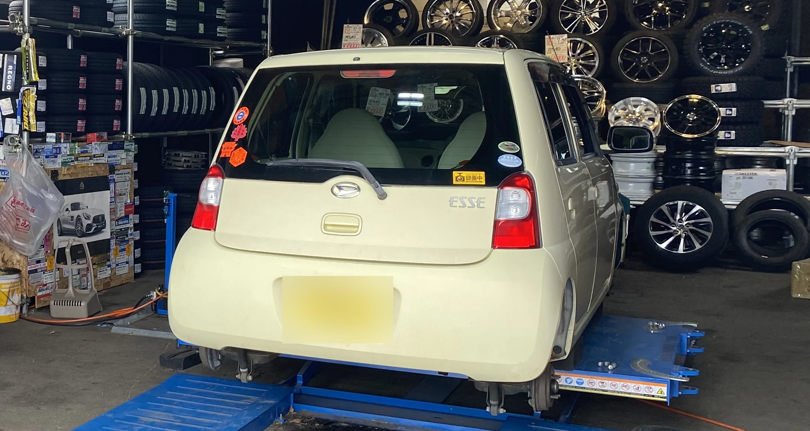
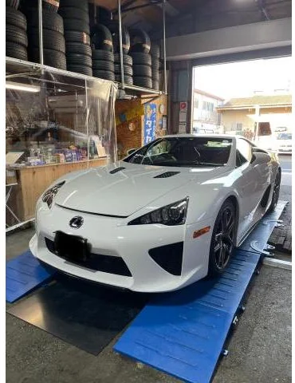
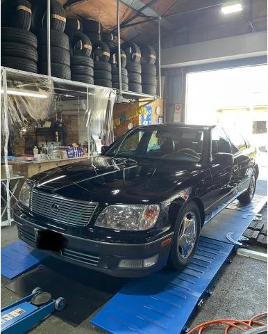
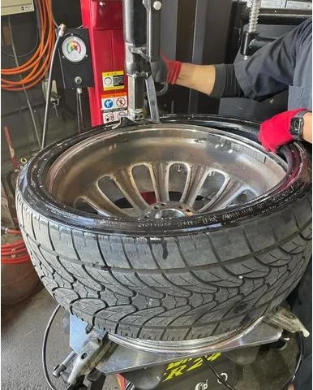
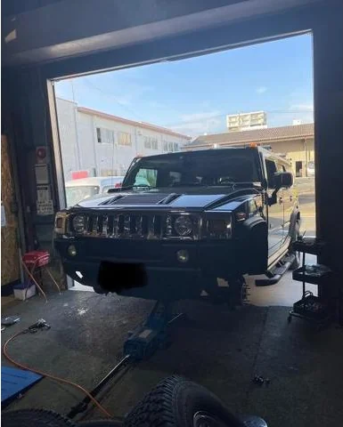
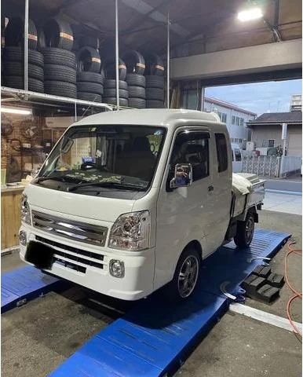
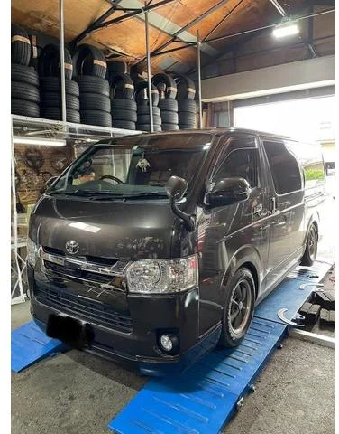
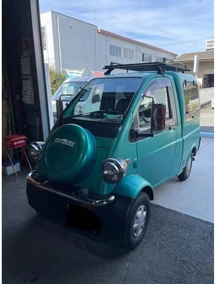
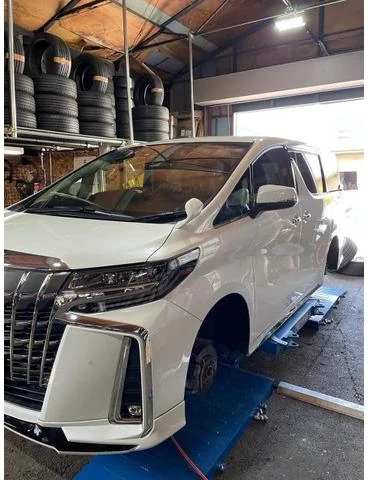
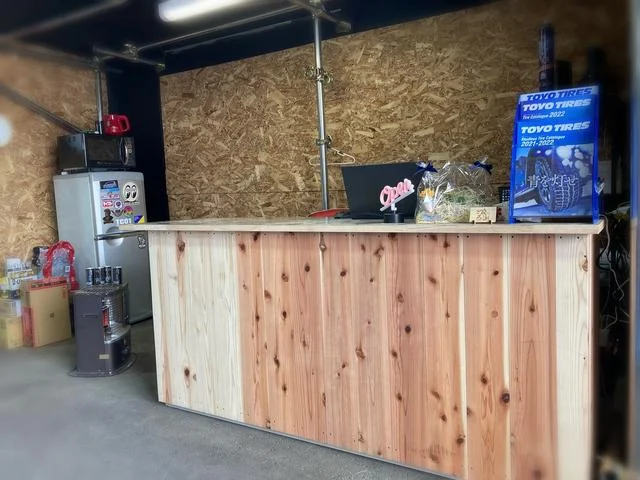

持ってきて。見てて。はい、終わり。

組替え・脱着・
バランス作業を待ちながら
見られる一人でも
くつろげる中古タイヤを
選んで用意新品と
ホイール付きタイヤカスタムの
相談
最近の作業
作業の記録をぜんぶ見る→レクサス LFA
サイズ記載なし
タイヤ交換。特殊なナットを扱う作業。

作業の記録を見るレクサス LS400
225/60-16
TOYO PROXES C1Sに交換。

作業の記録を見る24インチの組み替え
24インチ／車種記載なし
大径ホイールのタイヤを組み替え。

作業の記録を見るハマー H2
315/70R17
ヨコハマ GEOLANDAR A/T G015に交換。

作業の記録を見るスズキ キャリイ
155/65R14
MUDSTAR RADIAL A/Tに交換。

作業の記録を見るトヨタ ハイエース
215/65R16C 109/107R
TOYO H20に交換。

作業の記録を見るダイハツ ミゼットII
155/55R14
中古WORK LEADSLEDと新品タイヤを取付。

作業の記録を見るトヨタ アルファード
245/40R20
TOYO TRANPATH Lu IIに交換。

作業の記録を見る
タイヤとホイール
安心＋
スピーディー。

頼み方をえらぶ
East Garage のこと
2022年2月、
豊橋市小畷町に開いた、
タイヤとホイールの
店です。
予約とお問い合わせ
早くて安くてGOOD
Google マップの口コミより仕事が確実で速いです
Google マップの口コミ ホイールに傷がつかない様に丁寧
グーネットピットの口コミ 取付の配置にも気を配って頂きました
タイヤピットの口コミ 手際もよく丁寧に施工してくれていました。
タイヤピットの口コミ 気さくで明るくてとても話しやすかったです。
グーネットピットの口コミ キビキビとした作業姿勢、気さくな方でした。
タイヤピットの口コミ
場所と営業時間
〒440-0873愛知県豊橋市小畷町396 0532-35-9717
- 営業時間
- 10:00〜19:00
- 定休日
- 日曜日
祝日はお問い合わせください - 支払い
- 現金・カード・PayPay